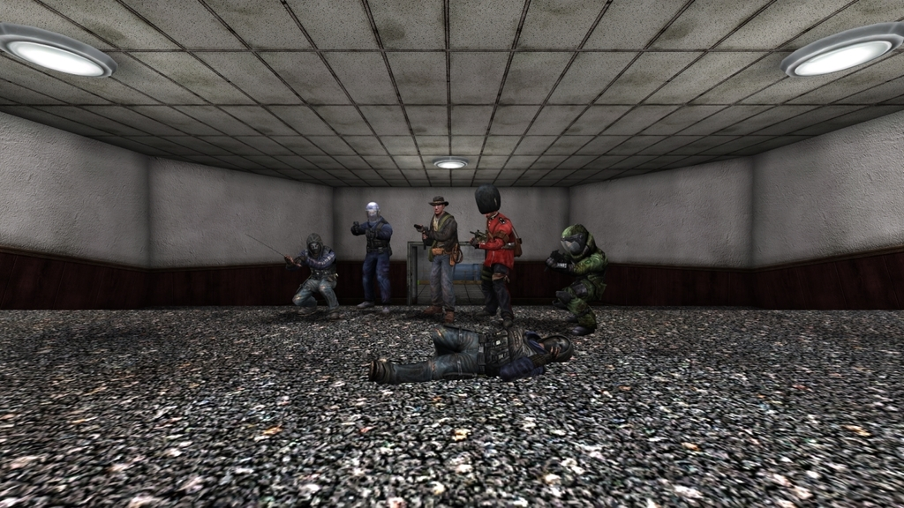
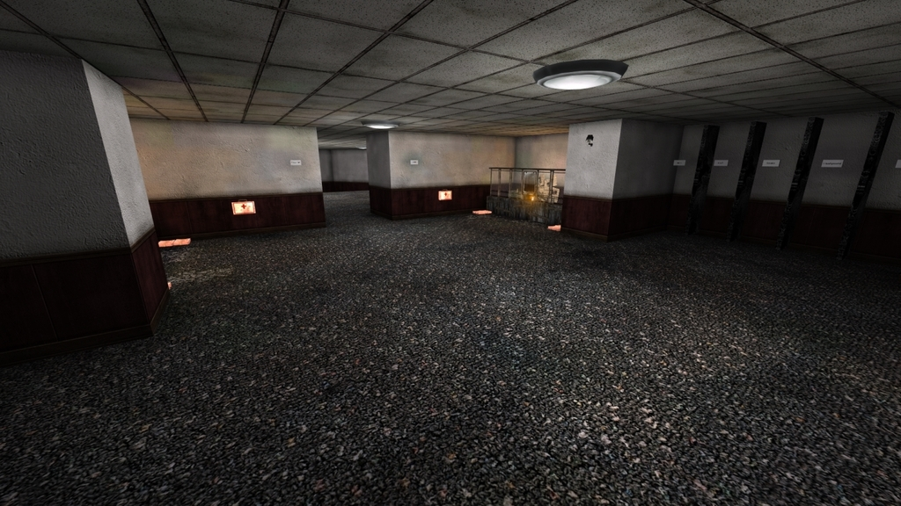
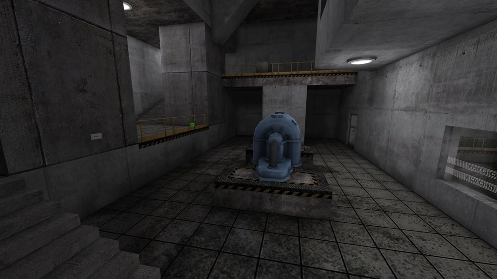
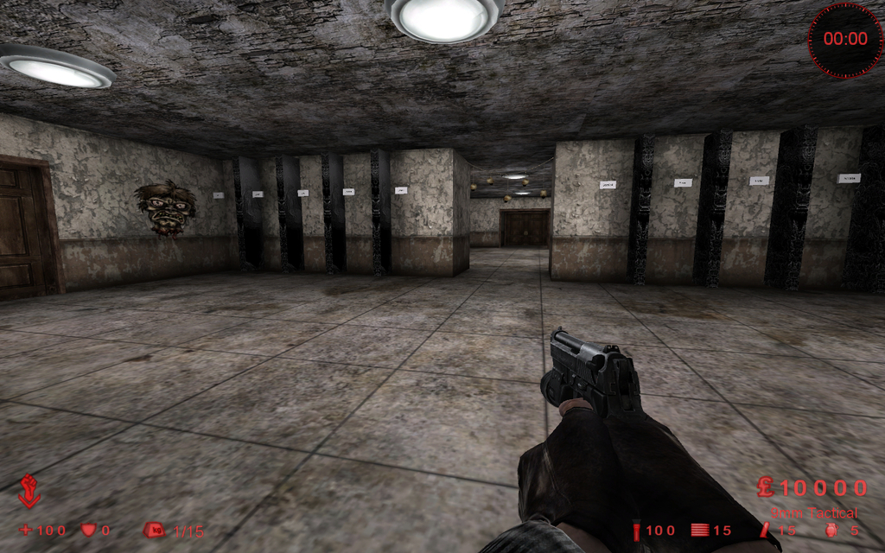
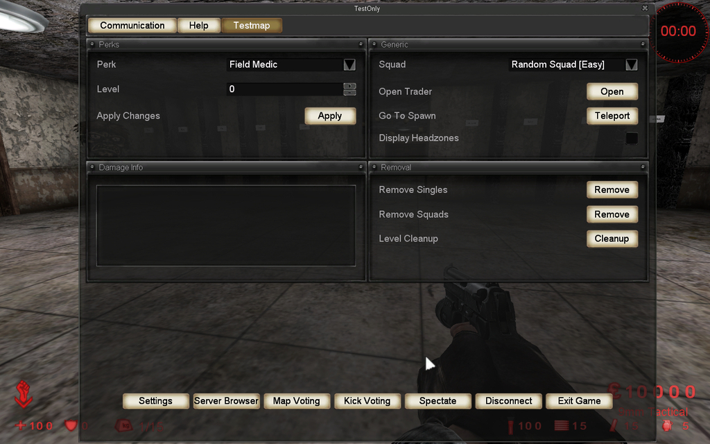
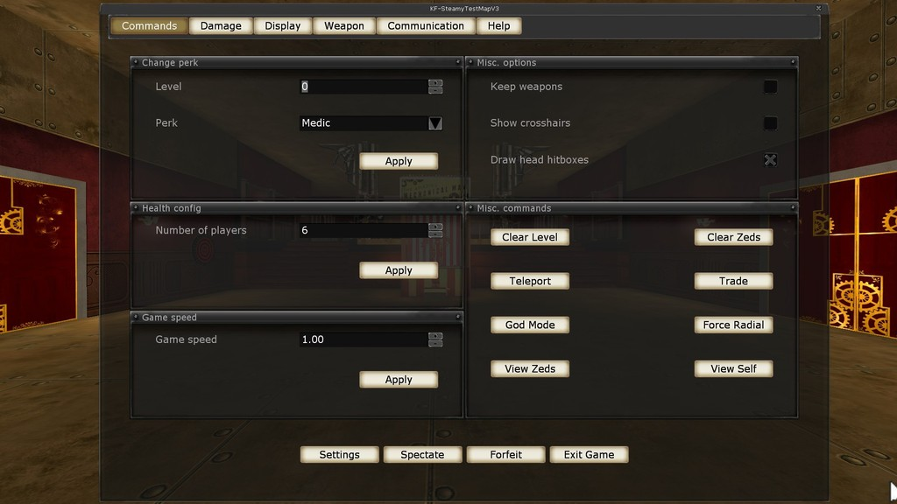

All power leveling and broken maps are ignored. I’m not sorry.
These kind of maps allow you to easily train against any zed you want, let it be a Scrake, double Fleshpounds, Patriarch, etc. Or try different weapon combos. This greatly saves your time and allows not to waste 1000h in pubs to understand how basic stuff works in game.
The Test Map v2




The Test Map v1
 
Steamy Test Map



Steamy Test Map Rodeo Mod


ScrN Testing Grounds